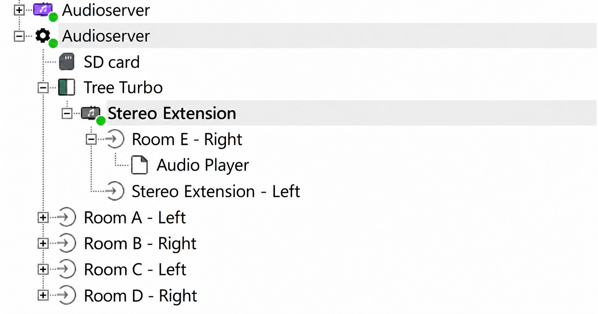
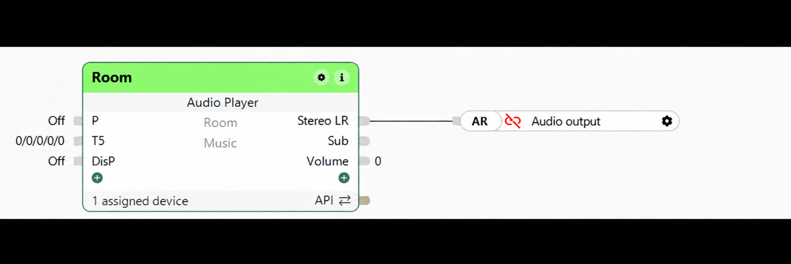

AudioDek 1.0.11 – Praktische Installationsanleitung
AudioDek hilft bei der Einrichtung und Wartung von Audiozonen. Sonn übernimmt die Wiedergabe; die Bedienung im Alltag bleibt in der Loxone App möglich.
1. Voraussetzungen prüfen
- LoxBerry 4.0 oder neuer auf x86_64 mit Python 3.
- Audioserver4Home mit laufendem Sonn Core. Änderungen an Ausgängen sind für 4.0.0-beta.19 vorgesehen.
- Ein erreichbarer Loxone Miniserver, Loxone Config und mindestens ein Netzwerkplayer: ein Squeezelite-Client (z. B. piCorePlayer) oder ein DLNA/UPnP-Renderer.
2. AudioDek installieren
- Öffne die Plugin-Verwaltung in LoxBerry und installiere die AudioDek-Installations-ZIP. Eine vorhandene AudioDek-Installation kannst du direkt aktualisieren.
- Öffne AudioDek. Klicke auf „Aktualisieren / Neu erkennen“ und prüfe, ob die Sonn-Konfiguration erkannt wird.
- Für die Gerätesuche melde dich in AudioDek unter „Sonn-Zugang“ mit einem Sonn-Administratorkonto an. AudioDek speichert das Passwort nicht.
3. Eine Zone in Loxone anlegen
- Aktiviere in Sonn unter „Zones“ die Loxone-Integration.
- Lege in Loxone Config einen Audio-Player-Baustein an, weise ihm einen Raum zu und verbinde ihn mit einem Ausgang des Audioservers.
- Übertrage die Konfiguration an den Miniserver. Aktualisiere anschließend AudioDek und prüfe, ob die Zone angezeigt wird.


4. Einen Player zuweisen
- Squeezelite: Konfiguriere den Client so, dass er sich mit Sonn verbindet. Wähle in AudioDek eine Zone und einen erkannten Player. Falls nötig, gib Name, IP-Adresse und Player-ID manuell ein.
- DLNA: Schalte den Renderer ein und verbinde ihn mit demselben Netzwerk. Öffne „DLNA-Player“, starte die Suche und wähle eine Zone ohne Ausgang. Der DLNA-Schalter unter „Receivers“ in Sonn ist dafür nicht erforderlich.
- Prüfe die Vorschau und bestätige die Zuweisung. AudioDek erstellt vorher eine Sicherung. Beim Anwenden wird Sonn neu gestartet; laufende Wiedergaben werden unterbrochen.
5. Wiedergabe prüfen
Starte im Sonn Player Musik in genau einer Zone und prüfe den Ton am Gerät. Aktualisiere AudioDek: Die Zone erscheint in der Tabelle für DLNA oder Squeezelite und bei laufender Wiedergabe zusätzlich unter „Zonen mit laufender Wiedergabe“. Der Status stammt von Sonn und bestätigt keinen hörbaren Ton. Ein aktiver Soloist-Prozess allein bedeutet keine laufende Wiedergabe.
Teste mehrere Zonen zunächst einzeln. Eine verzögerungsfreie Synchronisation zwischen DLNA und Squeezelite ist nicht für alle Geräte bestätigt.
6. Sicherungen und Wiederherstellung
Eine Zonensicherung enthält die gesamte Sonn-Konfiguration und die Soloist-Daten der ausgewählten Zone. Sie enthält nicht die Soloist-Daten aller Zonen. Eine Wiederherstellung kann auch spätere Konfigurationsänderungen an anderen Zonen zurücksetzen. Verwende zunächst die Vorschau.
Bei Problemen
- Zone fehlt: Prüfe den Audio-Player-Baustein und die Übertragung an den Miniserver.
- DLNA-Gerät fehlt: Prüfe Strom, Netzwerk und ob das Gerät als UPnP-Renderer verfügbar ist. Ein bereits zugewiesener Ausgang kann funktionieren, auch wenn eine Suche ihn gerade nicht findet.
- Kein Ton: Wähle die Zone direkt im Sonn Player, starte die Wiedergabe und kontrolliere die Sonn-Protokolle sowie die Audioverbindung am Gerät.
- Updates: Wähle in LoxBerry den Kanal für Vorabversionen und Releases, wenn du Testversionen erhalten möchtest.